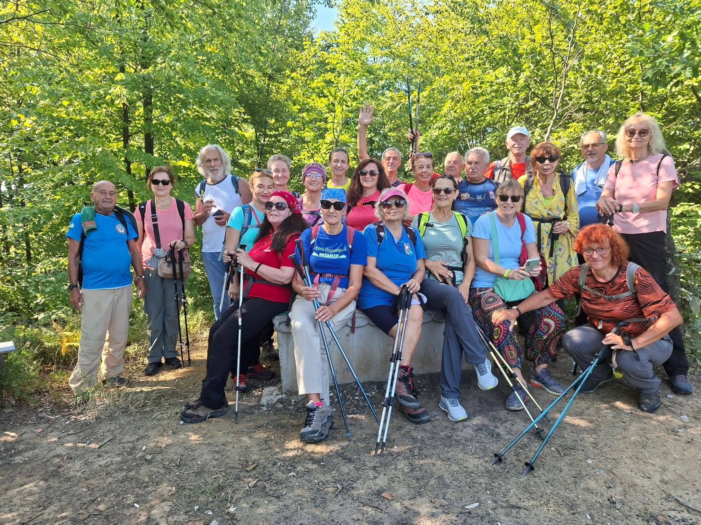

O nama
Sedam decenija zajedno osvajamo vrhove.
Konjuh od 1951.
Planinarsko društvo „Konjuh" Tuzla svoju priču započinje 1951. godine, kada je među zaljubljenicima u prirodu i planinarstvo pokrenuta inicijativa za osnivanje organizovanog planinarskog društva u Tuzli. Inicijativni odbor činili su Halid Čokić, Branko Stojanović, Mustafa Kapidžić, Čoko Jakov, Eduard Pavlović, Paša Abidinović i drugi entuzijasti.
Osnivačka skupština održana je u zgradi današnjeg Narodnog pozorišta u Tuzli, čime su postavljeni temelji društva koje će u narednim decenijama postati važan dio planinarskog života Tuzle i šireg područja. Prvi predsjednik bio je Halid Čokić, a prve članske karte štampane su u Tuzlanskoj štampariji — svjedočanstvo entuzijazma kojim je društvo stvarano od samog početka.
Priča koja traje.
Naziv „Konjuh" odabran je kao simbol jedne od najljepših planina sjeveroistočne Bosne, ali i kao omaž pjesmi „Konjuh planinom", koja je kroz svoje stihove sačuvala dio historije i sjećanja na Tuzlu i njen kraj. Od prvih okupljanja i izleta, društvo je postepeno gradilo svoju tradiciju, okupljajući generacije ljudi različitih godina, zanimanja i iskustava, ali povezanih istom ljubavlju prema planini. Kroz planinarstvo se nisu upoznavali samo novi predjeli i vrhovi, već su se stvarala prijateljstva, prenosila iskustva i učilo o odgovornom odnosu prema prirodi.

Konjuh danas.
Danas, više od sedam decenija nakon osnivanja, PD „Konjuh" Tuzla nastavlja čuvati duh i vrijednosti koje su postavili njegovi prvi članovi. Iako se način života, tehnologija i samo planinarstvo kroz godine mijenjaju, suština ostaje ista — okupiti ljude, izaći iz svakodnevice i zajedno doživjeti planinu. Društvo povezuje iskusne planinare i nove generacije, razvija planinarsku kulturu i njeguje odgovornost prema prostoru koji dijelimo — priča koja se nastavlja sa svakom novom generacijom.
Put rasta i zajedništva
Sedam decenija koraka, uspona i zajedništva — ispričano kroz prekretnice koje su oblikovale naše društvo.
-
1951
Osnivanje društva
Grupa entuzijasta osniva Planinarsko društvo „Konjuh" s ciljem promocije planinarstva i ljepota Konjuha.
-
1960
Prvi organizovani usponi
Organizujemo prve grupne ture i izlete, gradeći temelje buduće planinarske zajednice.
-
1975
Izgradnja planinarskog doma
Podignut prvi planinarski dom na Konjuhu — postaje vikend okupljalište i baza za brojne avanture.
-
1985
Uređenje staza i markacija
Pokrećemo akciju uređenja i markiranja planinarskih staza radi sigurnijeg i ljepšeg boravka u prirodi.
-
1995
Širenje članstva i aktivnosti
Društvo bilježi rast članstva i širi aktivnosti na edukacije, škole u prirodi i ekološke akcije.
-
2005
Nove staze, novi izazovi
Otvaramo nove planinarske rute i povezujemo Konjuh s drugim planinama u Bosni i Hercegovini.
-
2015
Zajednica koja traje
Kroz druženja, ture i volonterski rad jačamo zajedništvo i ljubav prema planini.
-
2025
Gledamo naprijed
Nastavljamo s novim projektima, brigom o prirodi i inspiracijom za buduće generacije planinara.